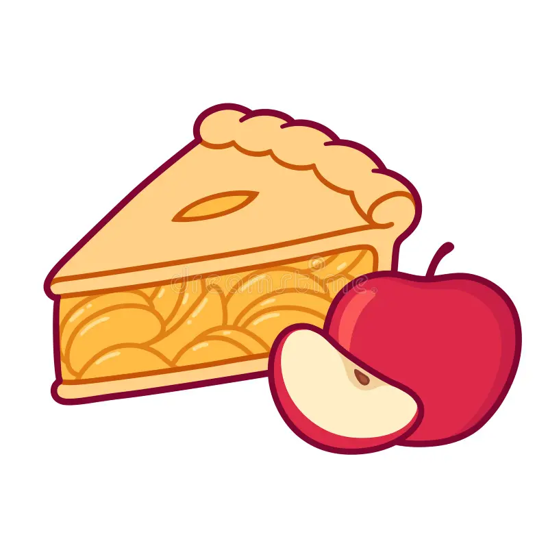

🍎 Oma’s Appelcake

Ingredients
- 4 eieren
- 300g suiker
- 1 zakje vanillesuiker
- 300g boter
- 300g (zelfrijzende) bloem
- 4 à 5 appels
Instructions
- Verwarm de oven voor op 150°
- Laat de boter bijna volledig smelten in de micro
- Splits de eieren
- Doe de eierdooiers, suiker en vanillesuiker samen in een kom en klop tot het mengsel verbleekt (niet meer fluo oranje maar licht geel)
- Voeg de zachte boter toe aan het mengsel en mix
- Doe de bloem bij het mengsel en mix deze rustig door het mengsel
- Klop de eiwitten in een andere kom tot sneeuw en voeg deze voorzichtig toe aan het mengsel
- Snijd de appels in blokjes en voeg toe
- Doe het mengsel in de ingevette vorm en steek hem in de oven voor ongeveer 40 minuten
📝 Notes
Als ge dit voor mama maakt doe er dan maar zeker 5 appels in.
Ook kan het zijn dat het langer dan 45 min duurt.
Als je het in cupcake vormpjes doet duurt het een pak minder lang